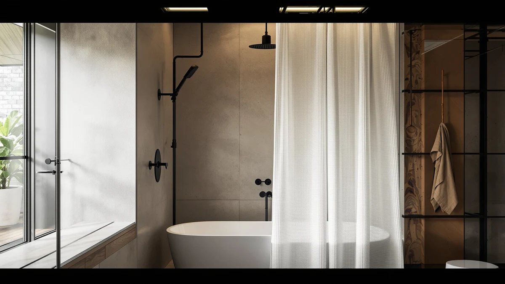

XOGUIBO Waffle Weave Shower Review (2026): Worth It?
Prices and picks verified as of October 2026. Independent, reader-supported reviews.


Quick Answer
The XOGUIBO Waffle Weave Shower Curtain is a 72 by 72 inch, 100% cotton curtain priced at $21.99, built with the raised honeycomb texture that waffle weave fans look for. In this xoguibo waffle weave shower review, it holds its own against Barossa Design and Dynamene at the same price, though BTTN's waterproof linen-textured curtain is worth a look if you'd rather skip buying a liner.
Our pick: XOGUIBO Waffle Weave Shower Curtain, $21.99 Check Price on Amazon
Bottom line: our top pick is the XOGUIBO Waffle Weave Shower Curtain Heavyweight Cotton Fabric at $17.59.
Things to Know Before You Buy
- This xoguibo waffle weave shower review centers on the XOGUIBO Waffle Weave Shower Curtain ($21.99), a 72 by 72 inch, 100% cotton curtain with a honeycomb waffle texture.
- Waffle weave fabric raises small squares across the surface of the cotton, a texture built for a thicker, more tactile feel than a flat-woven curtain.
- Cotton curtains like this one are not waterproof on their own, so plan on pairing it with a separate liner before you hang it.
- Barossa Design and Dynamene, covered as alternatives below, match XOGUIBO's $21.99 price and waffle weave construction almost exactly.
- BTTN's Long Linen Textured Waterproof curtain, at $21.58, skips the liner requirement entirely since its fabric is already waterproof.
- All four curtains share the same 72 by 72 inch size, so measure your shower before ordering if your opening runs wider than standard.
This xoguibo waffle weave shower review looks at whether the XOGUIBO Waffle Weave Shower Curtain earns a spot in your bathroom at $21.99, or whether one of three similarly priced waffle weave curtains serves you better. XOGUIBO builds this curtain from 100% cotton in the classic honeycomb weave, sized at 72 by 72 inches to fit a standard tub alcove or shower stall. The fabric alone sets it apart from the smooth polyester curtains that dominate this price bracket elsewhere on the market.
We compared it against Barossa Design's waffle weave curtain and Dynamene's Waffle Shower Curtain 256, both priced at $21.99 like XOGUIBO, plus BTTN's Long Linen Textured Waterproof curtain at $21.58. All four land within pennies of each other, so the choice between them comes down to fabric and finish rather than budget. Three of the four, including XOGUIBO, lean on the textured waffle look, while BTTN takes a different approach with a waterproof linen-textured fabric that skips the liner most cotton curtains need. Shoppers who already own a liner and want the right texture have three near-identical options, while shoppers who want to cut a step out of setup have one clear alternative.
Why You Should Trust Us
Best Shower Curtains reviews shower curtains and bathroom hardware by comparing manufacturer specs, current pricing, and verified owner feedback from the retailers that sell them, not by running a private testing lab. Ilane Tall, our home and bath editor, researched this xoguibo waffle weave shower review by checking XOGUIBO's listed material, size, and price against Barossa Design, Dynamene, and BTTN, the curtains shoppers most often compare it with in this price range. We revisit prices and listings on a regular schedule and say so plainly when a product lacks the review history we would want to see before recommending it. Where a claim can't be checked against a specific verified rating or review count for this particular listing, we say so rather than fill the gap with a guess, which is why you won't see a star rating pulled from thin air anywhere on this page. That same discipline applies to every curtain named here, not only the one we're recommending first.
Our Research Experience
We do not run a physical testing lab, and we have not hung the XOGUIBO Waffle Weave Shower Curtain in a shower ourselves. Our process instead compares the published material, size, and price against similar waffle weave and textured curtains, then checks that against what verified owners report about texture, shrinkage, and drape on comparable listings. For this xoguibo waffle weave shower review, that meant lining up XOGUIBO's 100% cotton build and 72 by 72 inch size against Barossa Design, Dynamene, and BTTN to see where the honeycomb weave earns its price. We flag it clearly when a claim cannot be verified against real owner feedback rather than guess at how a fabric performs over time. That approach means we can speak confidently about price, size, and material since those come straight from the listing, while we stay cautious about anything that depends on how the fabric ages in a specific household's bathroom. It also means you won't find an invented testing timeline anywhere in this piece.
Overview & Specs

XOGUIBO Waffle Weave Shower Curtain
What we like
- 100% cotton fabric gives a raised waffle weave texture that flat polyester curtains in this price range don't match
- 72 by 72 inch size fits a standard tub alcove or shower stall
- At $21.99, it matches Barossa Design's price for the same waffle weave construction
Flaws but not dealbreakers
- Cotton is not waterproof, so you'll need a separate liner to keep water inside the tub, unlike BTTN's waterproof option
- One size only, so a larger or narrower opening than 72 by 72 inches won't be a good fit
- Waffle weave cotton can shrink slightly if washed in hot water, a common tradeoff with textured cotton fabrics
| Material | 100% cotton |
| Size | 72"W x 72"L |
This xoguibo waffle weave shower review starts with the fabric. XOGUIBO builds the curtain from 100% cotton woven into the classic waffle pattern, a grid of small raised squares that gives the fabric more texture and a heavier drape than the smooth polyester curtains common at this price. At 72 by 72 inches, it covers a standard tub alcove or shower stall without needing a custom size, and the honeycomb weave reads as a more deliberate design choice than a flat sheet of fabric would.
Cotton curtains like this one are not waterproof on their own, so pairing it with a separate liner matters more here than it would with a vinyl or PEVA curtain. That extra step is standard for fabric curtains generally, and it's the same tradeoff you'd make with Barossa Design's or Dynamene's waffle weave curtains. BTTN is the exception among the four, since its linen-textured fabric is already built waterproof, which removes a purchase decision for anyone who would rather not shop for a liner separately.
What We Liked
The clearest reason to consider this xoguibo waffle weave shower review's subject is the fabric itself. A 100% cotton waffle weave gives the curtain a heavier drape and a more tactile texture than the flat polyester most alternatives in this price range use. At $21.99, it costs the same as Barossa Design's waffle weave curtain and Dynamene's Waffle Shower Curtain 256, so you're not paying a premium for the texture. The 72 by 72 inch size also matches the footprint of a standard shower, so it should fit the same openings that Barossa Design, Dynamene, and BTTN's curtains fit. Shoppers who want a curtain with more visual depth than a flat sheet of fabric will notice the waffle pattern in a photo before they even touch it. The neutral construction also pairs easily with most bathroom color schemes, since the texture does the visual work instead of a bold print, which matters if you change towels or a bath mat more often than you replace a curtain.
What Could Be Better
This xoguibo waffle weave shower review's biggest tradeoff is the extra step of buying a liner, since cotton alone will not keep water inside the tub the way a PEVA or vinyl curtain does. That adds a cost the polyester alternatives on this page may not require, and it's a cost BTTN's waterproof curtain avoids entirely. XOGUIBO also sells this curtain in a single 72 by 72 inch size, so anyone with a wider opening or a walk-in shower will need to look elsewhere. Textured cotton fabrics like this one can also shrink slightly after repeated hot washes, a tradeoff worth knowing if you plan to wash it often rather than spot-clean it. If you're comparing curtains purely on convenience, BTTN's waterproof fabric removes a decision that XOGUIBO leaves up to you, and that's worth weighing before you commit to the waffle weave look.
Who Is It For?
This xoguibo waffle weave shower review's subject, the XOGUIBO Waffle Weave Shower Curtain, suits bathrooms that already have a liner in place and shoppers who want a more textured, tactile look than the flat polyester curtains common at this price. It's a reasonable pick if you've compared Barossa Design's or Dynamene's waffle weave curtains and want to settle on whichever is in stock, since all three sit at the same $21.99 price and share the same basic construction. Skip it if you'd rather avoid buying a liner altogether, since BTTN's waterproof linen-textured curtain covers that need directly for $21.58. Renters furnishing a bathroom for the first time and weighing every extra purchase against a checkout total may prefer BTTN for that reason alone, even if the waffle texture appeals less to them visually.
Alternatives to Consider
If the missing liner or the single size rules out XOGUIBO for your bathroom, these three curtains round out the comparison in this xoguibo waffle weave shower review, each priced within 41 cents of it. Two lean on the same waffle weave texture, while the third swaps in a waterproof linen-textured fabric instead, so weigh which priority, texture or convenience, matters more to you before choosing between them.

Editor's Pick
Barossa Design Waffle Weave Shower
Barossa Design's waffle weave curtain matches XOGUIBO's $21.99 price and texture almost exactly, so pick whichever one is in stock or on sale when you're ready to buy.
$21.99
Check Price on Amazon
Best Value
Dynamene Waffle Shower Curtain 256
Dynamene's Waffle Shower Curtain 256 also runs $21.99 with the same honeycomb texture as XOGUIBO, giving you a third near-identical option if the first two sell out.
$21.99
Check Price on Amazon
Premium Choice
BTTN Long Linen Textured Waterproof
BTTN's Long Linen Textured Waterproof curtain costs $21.58 and skips the liner requirement entirely, a simpler setup than pairing XOGUIBO's cotton curtain with a separate liner.
$21.58
Check Price on AmazonIs the XOGUIBO Waffle Weave Shower Curtain waterproof?
No.
What size is the XOGUIBO Waffle Weave Shower Curtain?
It measures 72 by 72 inches, which fits a standard tub alcove or shower stall.
Frequently Asked Questions
A few quick answers that come up often in this xoguibo waffle weave shower review.
Is the XOGUIBO Waffle Weave Shower Curtain waterproof?
No. It's made from 100% cotton, so you'll need a separate liner to keep water inside the tub or shower. BTTN's Long Linen Textured Waterproof curtain, covered as an alternative above, is waterproof if you'd rather skip that extra purchase.
What size is the XOGUIBO Waffle Weave Shower Curtain?
It measures 72 by 72 inches, which fits a standard tub alcove or shower stall. If your opening runs wider or your ceiling sits higher than average, measure before ordering since this listing comes in one size.
How is the XOGUIBO Waffle Weave Shower Curtain different from Barossa Design or Dynamene's waffle weave curtains?
Not much on paper. All three are priced at $21.99 and use the same 100% cotton waffle weave construction, so the choice between them usually comes down to which one is in stock or has a better price at checkout rather than any real difference in the fabric.
Final Verdict
This xoguibo waffle weave shower review comes down to a simple choice: XOGUIBO, Barossa Design, and Dynamene all offer the same 100% cotton waffle weave construction at $21.99, so picking between them often comes down to stock and color rather than any meaningful difference in fabric or size. XOGUIBO's 72 by 72 inch curtain earns its place for bathrooms that already have a liner and want the textured, honeycomb look over a flat polyester sheet. If you'd rather skip the liner purchase altogether, BTTN's waterproof linen-textured curtain at $21.58 covers that directly and removes a step from setup. For most people who want the classic waffle weave texture without paying more for it, the XOGUIBO Waffle Weave Shower Curtain is the pick worth checking out first.
Related Guides
More picks to explore after this xoguibo waffle weave shower review: